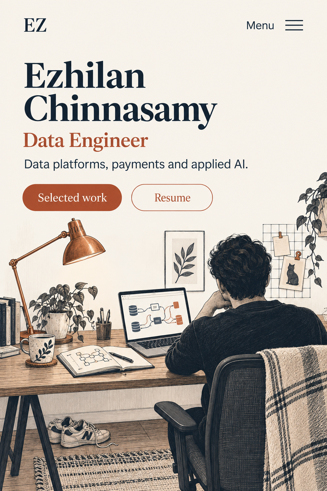
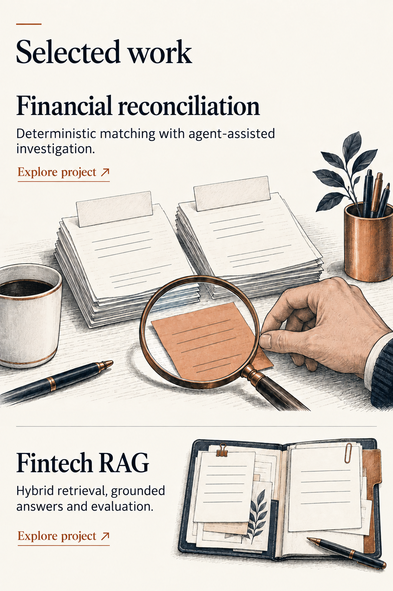
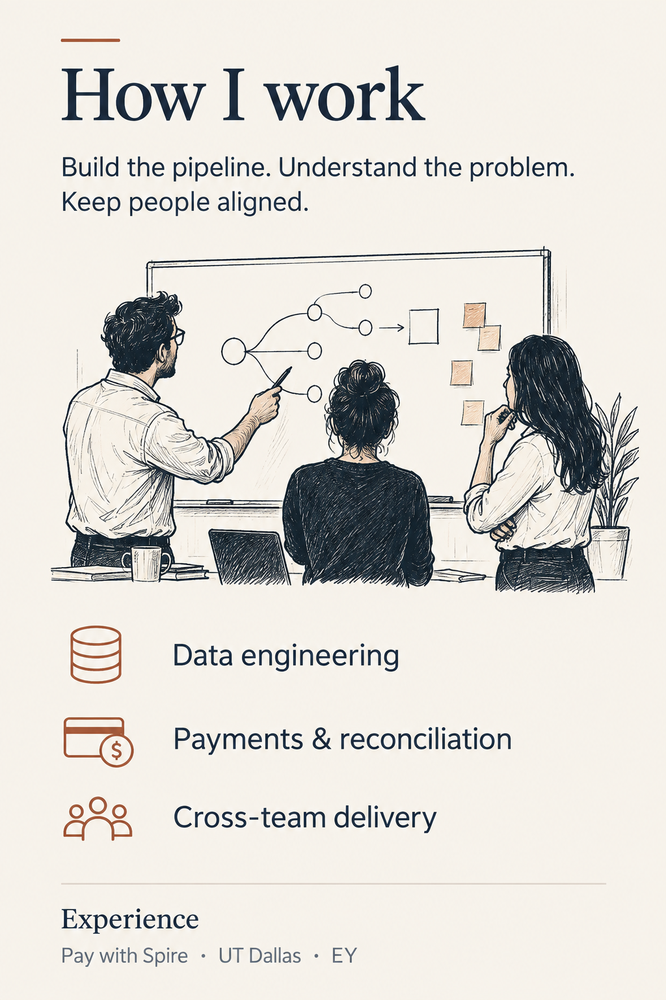
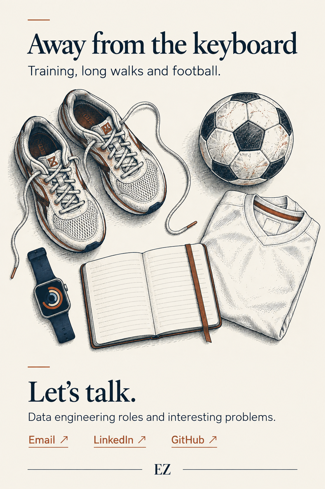

The engineer
A working environment with human details, rather than a scenic backdrop.
Interaction idea
A restrained desk-lamp glow on focus or tap; no looping animation. Proposed, not implemented in this static mockup. Respect reduced-motion preferences.
{kind=link}

The problem-solver
Reconciliation becomes a visual case file, with one exception standing out.
Interaction idea
Tap a project to open its case study; a small copper underline signals the action. Proposed, not implemented in this static mockup. Respect reduced-motion preferences.
{kind=link}

The collaborator
Show the communication and cross-team delivery behind the engineering.
Interaction idea
Expandable experience entries, with the important evidence visible by default. Proposed, not implemented in this static mockup. Respect reduced-motion preferences.
{kind=link}

Outside work
Fitness, walking and football: a personal closing section, not a second professional headline.
Interaction idea
Optional tap-to-reveal hobby notes; nothing important hidden behind hover. Proposed, not implemented in this static mockup. Respect reduced-motion preferences.
{kind=link}
